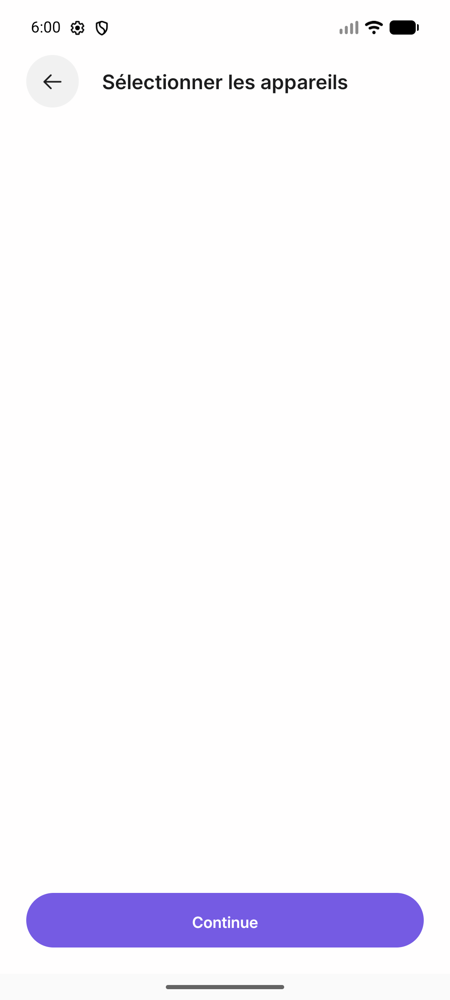
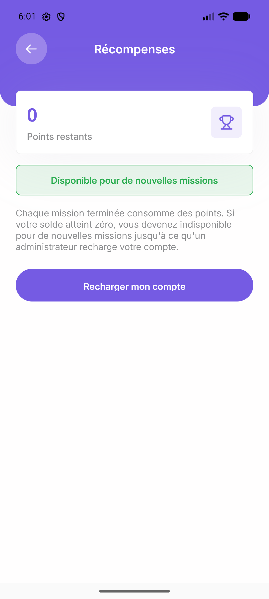
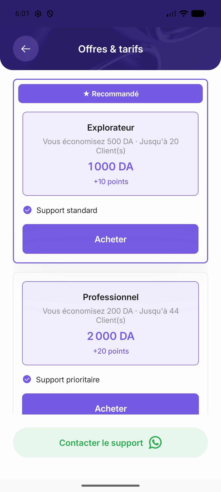
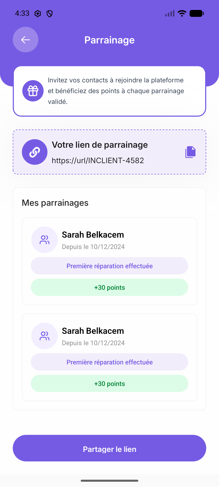
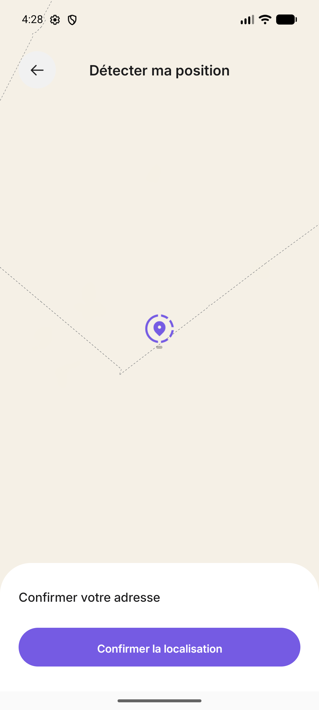

InTech — APK, experience, and product audit
Verdict: suitable for internal development testing; not ready for a public launch. There is a substantial interface foundation, but the app does not yet demonstrate a dependable complete repair transaction. Authentication is deliberately unfinished, several visible features are inactive or contain sample content, and network failures undermine session and screen reliability.
Prepared 28 September 2026. Emulator observations: 26–27 September 2026. Input: app-release.apk, version 1.0.0 (1), package com.oualidsahnoun.intech.
1. Scope and confidence
This audit combines installation and interaction on the available Android emulator, screenshots and UI hierarchy captures, runtime logs, manifest/package inspection, signing verification, and strings extracted from compiled Hermes bytecode. The evidence folder contains 124 screenshot captures, including repeated states; that is not 124 distinct screens tested. The bundle contains 126 route entries, including layouts; their presence does not prove they work.
Client and technician access were tested with the single number authorized by the owner. The owner confirmed that OTP is not functional and all numbers currently pass. Technician login eventually succeeded with that same number, and switching back to Client worked.
No real repair request, payment, technician contact, community message, identity-document upload, or completed professional-profile submission was made. Therefore matching, quotes, settlement, warranties generated by completed jobs, push delivery, and the end-to-end job lifecycle remain unverified. This is not a source-code review, penetration test, or backend authorization audit.
Evidence labels throughout this report distinguish observed behavior, static configuration, and recommendations. An empty account or failed screen is not proof that a backend feature does not exist.
2. What works, what is partial, and what remains unverified
| Area | Result | Practical interpretation |
|---|---|---|
| Install and launch | Works in the tested emulator | APK installs and reaches onboarding/home. No confirmed app fatal crash was captured. |
| French/Arabic selection | Works in inspected screens | Arabic home/profile mirrored to RTL; switching back to French worked. Full localization is not verified. |
| Phone entry | Partial | Empty input is rejected; normalization works. There is no functioning OTP verification. |
| Client and technician access | Partial | Both roles were reached with the supplied number. First technician attempt failed with misleading email/password wording; retry succeeded. |
| Role switching | Works after both roles were accessed | Client and Technician appeared in the switcher after technician login. Initially only Client was shown. |
| Repair request wizard | Partial | Service, appliance, symptoms, media entry points, and location steps exist. Empty problem data can advance; location recovery is weak. No booking submitted. |
| AC services | Partial | Installation/cleaning and individual/business choices were reachable. Quantity, schedule, and final confirmation were not fully tested. |
| Existing request list | Partial | One pending cleaning request appeared, but details omitted values and a past appointment remained upcoming. |
| Warranty request | Empty state works | Explicit no-active-warranty message is present. Warranty issuance/claim handling unverified. |
| Shop | Incomplete in this test | Placeholder category, mismatched titles, sparse data, inconclusive search, and inactive filter. |
| Technician onboarding | Partial | Identity, business status, domain, device, and work configuration screens are reachable. Requiredness and completeness rules are inconsistent. |
| Revenue/reports | UI renders | Zero balances and empty histories display. Calculations and real transactions were not tested. |
| Credit offers | UI renders | Two plans display. Purchasing, credit accounting, and refunds unverified. |
| Community | UI reachable | Empty feed/composer visible with incomplete professional profile. Posting and moderation untested. |
| Notifications | Empty state works | Empty inbox renders. No push delivery test. |
| Policies, AI chat, spare parts | Failed interaction | Taps produced no visible navigation in the tested build. |
| Referral and promotions | Sample/stale content | Placeholder referral URL and repeated sample people; expired promotional offer shown normally. |
3. Prioritized defects and release risks
Priority meanings: P0 blocks public exposure of real accounts; P1 blocks a reliable pilot; P2 materially harms usability/trust; P3 optimization or scope improvement. These are project priorities, not formal vulnerability scores.
A01 — P0: Phone authentication is intentionally unfinished
Observed and owner-confirmed. Entering the supplied number reached the client account without OTP verification. The owner confirmed all numbers pass. This is expected current development behavior, but a production release blocker. This audit did not attempt access to another person's account.
Fix: enforce verification on the server, isolate any development bypass, and make production configuration fail closed. Add code expiry, attempt limits, resend throttling, session revocation, and role authorization independent of client UI.
Acceptance: a fresh production session cannot access private account APIs without valid verification; invalid, expired, replayed, and rate-limited codes fail; a development bypass cannot be enabled in production accidentally.
A02 — P0: HTTP API configuration and cleartext allowance
Static evidence: the bundle includes http://141.136.42.95:8000/api; the manifest enables usesCleartextTraffic=true. This is a concrete insecure configuration risk. No traffic interception was performed, so this report does not claim a particular credential was observed on the wire.
Fix: use an HTTPS API domain and valid certificate, remove production HTTP fallback, and disallow cleartext. Validate authentication, media, realtime connections, and redirects as well as the main API. Android documents the relevant controls in its network security configuration guide.
Acceptance: all production endpoints use TLS; HTTP and downgrade attempts are rejected; the complete client/technician journey still works.
A03 — P1: APK is signed with an Android Debug certificate
Static evidence: apksigner verifies a signer whose DN is CN=Android Debug, OU=Android, O=Unknown, L=Unknown, ST=Unknown, C=US. This is separate from the runtime debug flag: the installed application was not marked debuggable.
Fix: establish controlled production signing and CI artifact verification. Register the correct production signing fingerprints with relevant providers. A release filename alone does not establish release signing. See Android app signing documentation.
Acceptance: release artifacts use the intended production signing identity; CI rejects debug-signed outputs; an update installs over the intended prior production build.
A04 — P1: Repeated network/JSON failures lack useful recovery
Observed: the saved runtime log contains 57 JSON Parse error: Unexpected character: < entries between 17:58:32 and 18:02:38 on September 27. Many entries are about five seconds apart. A separate saved log contains Network request failed while fetching the unread-notification count. The exact failing endpoint behind the JSON errors is not established.
Supporting probe: the preserved unauthenticated GET to /api/shop/brands with Accept: application/json returned 401. This is expected for an endpoint requiring authentication and does not identify the source of the JSON errors. A separate 500 response was seen during exploration but was not saved with reproducible request details, so it is excluded as evidence. The leading < in the parse error suggests a non-JSON response such as HTML, but that is an inference until a failing request and response are captured together.
Fix: centralize response parsing, handle non-JSON errors safely, distinguish 401 from transport/server failures, expose a useful retry state, and apply polling backoff. Correlate server and client logs without storing sensitive data.
Acceptance: timeout, offline, HTML 500, JSON 401, and malformed-response tests show appropriate recoverable UI, without parse-error polling loops or blank success-looking data.
A05 — P1: Restart showed onboarding and later blank account data; cause unconfirmed
Observed: after force-stop/relaunch, the app showed loading and then the language/onboarding screen (61–63 captures). In a later session the client home showed no recent request, and the account screen's phone field was blank (70, 72 captures); an earlier account capture had shown the supplied phone number (11). The preserved evidence does not show whether the same account/session was active at both times, why onboarding appeared, or whether any backend data was lost. An authentication network error was noted during exploration, but its specific log entry was not preserved and is not used as proof of the cause.
Investigation/fix: reproduce with one fixed account and request while recording session-validation responses. Distinguish token expiry, profile loading, account switching, and connectivity failure. Preserve navigation and recoverable local state during a temporary outage. Avoid presenting a loaded-looking account before hydration completes.
Acceptance: restart with valid/expired credentials, slow connectivity, and no connectivity; temporary outages preserve a clear recoverable state, while only a definitive invalid session requests sign-in.
A06 — P1: Request detail omits data shown elsewhere
Observed: the request-list UI hierarchy showed an AC cleaning request with Quantité 1, En attente, and an appointment of September 25, 2026, 15:00–18:00. After opening it, the detail hierarchy showed Suivi de statut and labels for Quantité, Étage, and Disponibilité, but no values for those labels; the status timeline also showed no status text. The later screenshot with the support sheet shows the same mostly empty detail layout. Because the early capture sequence could catch a transition frame, the UI hierarchies are the stronger evidence. The request remained under À venir during September 26 testing, but that may reflect a pending-status grouping rather than a date-based bug; the missing overdue explanation is the UX concern.
Fix: align list/detail API models; explicitly represent missing fields; define overdue, rescheduling, cancellation, and completion transitions. A missed appointment must not look silently current.
Acceptance: the same request has consistent details across views; past unresolved appointments receive the agreed operational status and next action. Evidence: 12-requests.xml, 13-request-detail.xml, 14-request-support.png.
A07 — P1: Repair intake permits insufficient diagnosis information
Observed: continuing without selecting a symptom or writing a description advanced to location. Final submission enforcement is unverified.
Fix: decide the minimum dispatchable brief per service. Either require a symptom/description or explicitly allow an “I don't know” diagnostic visit with its fee and expectations. Keep media optional unless truly necessary.
Acceptance: every submitted repair has enough information for the receiving technician, or a clearly labeled diagnostic-only reason. Evidence: 19-device-problem.xml, 20-problem-empty-next.xml.
A08 — P1: Location failure has no dependable manual escape
Observed: after location permission denial, a map with a blank address remained. The manual-address path primarily exposed map/search UI with a default Algiers-area location. Search did return suggestions, but the GPS-unavailable path and confirmation produced no useful visible progress in the tested state.
Fix: provide explicit street/building/unit/landmark entry, permission-denial guidance, a validated map/address pair, and service-area checks. Prevent confirmation of an unresolved address, explain why, and preserve earlier form data.
Acceptance: a user completes address entry with permission denied, GPS unavailable, map loading failure, and a valid searched address. Evidence: 22-location-denied.png, 24-manual-address.png, 28-gps-unavailable.png, 29-confirm-no-location.png.
A09 — P1: Professional onboarding does not communicate or enforce completeness consistently
Observed: identity Continue advanced without ID/passport or diploma files. Commercial-registry mode correctly blocked missing documentation, while “none for the moment” allowed progress. Device-specialty selection then appeared empty and Continue still advanced to work configuration. The final profile was not submitted; backend approval enforcement remains unknown.
Fix: distinguish draft navigation from submission validation. Show required/optional fields and explicit states: draft, submitted, needs correction, verified, suspended. Block accepting work until the required server-side verification passes. Handle an empty device catalog as an error or an explicit no-selection-needed state.
Acceptance: draft steps may be revisited, but incomplete or unverified profiles cannot become dispatchable. Document-free business status must have an intentional business rule. Evidence: 88-tech-identity.png, 89-identity-empty-validation.png, 90-status-empty-next.png, 96-tech-devices-settled.png.
A10 — P1: Credit balance contradicts technician availability
Observed: the rewards screen showed zero points and “Disponible pour de nouvelles missions,” while explanatory text said zero points makes the technician unavailable until an administrator recharges the account.
Fix: derive availability and messaging from one server-backed rule. Separate reward points from purchased job-access credits if they are different currencies. Explain when credits are reserved, spent, released, or refunded.
Acceptance: at zero, positive, reserved, and refunded balances, home, rewards, matching, and purchase history agree. Evidence: 109-rewards.png.
A11 — P1: Important visible controls do not respond
Observed: repeated service-policy taps, terms, AI chat, and technician spare-parts entry produced no visible navigation. The support WhatsApp control and shop filter also produced no visible result. This does not identify whether handlers are missing, routes fail, or a loading error is hidden.
Fix: implement and verify each route/action or remove it from the release surface. Policies and support must be reachable before users commit to service.
Acceptance: every visible actionable control has an observable outcome, useful error, or clearly communicated unavailable state. Evidence: captures 42–47, 112-spare-parts.png, 39-search-filter.png.
A12 — P2: Shop has placeholder content and incorrect screen identity
Observed: “Category1,” the subtitle “Mes demandes - À venir” inside Magasin, “Demande de réparation” above product search, and “Détails de Produit” on a brand-related view. The visible brand card paired a person's name with a Brandt storefront. Searching Samsung did not yield a clear relevant result or explanatory empty state.
Fix: clean the catalog data and screen titles, define brand/category/product navigation, and provide query-specific loading, results, and empty states. If commerce cannot support a complete purchase flow, hide it for the repair pilot.
Acceptance: known catalog fixtures yield correct search/filter results and labels; unknown queries show a clear empty state. Evidence: 34-shop.png, 35-all-brands.png, 36-brand.png, 38-product-search.png.
A13 — P2: Referral, support, and promotion content undermine trust
Observed: referral displays https://url/INCLIENT-4582 and repeated Sarah Belkacem entries; support uses contact@simoudz.com, 0555555555, and SimouDzTV branding. A normal-looking promo, Simou2026, expires March 31, 2024 despite testing in 2026. Several values also appear literally in the bundle.
Fix: remove demo records; use real account-specific referral data and approved support contacts; enforce promotion validity on the server and clearly mark expired offers. Verify referral deep links and reward eligibility.
Acceptance: a new account sees its own real or empty referral state, support channels open correctly, and expired offers cannot be presented as redeemable. Evidence: 41-support.png, 48-referral.png, 60-promos.png.
A14 — P2: Wrong empty-state and authentication copy
Observed: the Completed tab says “Aucune réparation en cours” and asserts equipment is in perfect condition. Technician phone login briefly reported incorrect email/password; logout warned about needing email/password again although phone login was used.
Fix: bind copy to actual tab, authentication method, and error. An empty history should not make a diagnostic claim about an appliance.
Acceptance: upcoming/completed/cancelled states each have truthful text; phone-flow errors mention the relevant action. Evidence: 33-completed-requests.png, 75-logout.png, 84-technician-result.png.
A15 — P2: Safe area, accessibility, and information hierarchy need correction
Observed: the shop search title overlaps the system status-bar area. Important icon-only controls lack useful labels in the UI hierarchy, including some back, add-request, notification, and quantity controls. Some controls appear small; effective hit areas and contrast ratios were not measured. An English “Bottom sheet backdrop” label remains in localized screens.
Fix: apply safe-area handling consistently, label every interactive icon, inspect touch bounds, test text scaling and screen-reader order, and localize accessibility text. Use readable contrast and stable headings throughout forms.
Acceptance: key flows work with TalkBack and increased font size; controls remain visible and reachable; no content overlaps system bars. Evidence: 37-search-ready.png and corresponding UI XML files.
A16 — P2: Appliance taxonomy mixes independent attributes
Observed: a single-choice list mixes single-door/two-door/side-by-side refrigerators with NoFrost and Inverter. Those can describe the same appliance rather than exclusive types.
Fix: separate form factor, cooling technology, and optional model/brand details. Offer “Not sure” and request only information needed for routing or pricing.
Acceptance: a two-door inverter NoFrost refrigerator can be described without contradictory selection or forcing the user to guess.
A17 — P2: Credit plans lack an understandable economic promise
Observed: offers show 1,000 DA for 10 points and “up to 20 clients,” versus 2,000 DA for 20 points and “up to 44 clients,” with different savings claims. The displayed content does not explain the conversion or savings baseline. Purchase was not tested.
Fix: explain what one credit buys, whether a client means a lead or completed job, charges for rejected/unreachable requests, refunds, expiry, and why plan yields differ. Avoid implying guaranteed work without supply evidence.
Acceptance: a technician can calculate the cost of an accepted, cancelled, and unsuccessful job from the offer and ledger. Evidence: 110-credit-offers.png.
A18 — P2: Privacy and permission scope require a release review
Static evidence: backup is enabled; no explicit backup exclusion configuration was identified in the inspected manifest. Permissions include precise/coarse location, camera, microphone, storage, overlay, and media-playback foreground service. This is not proof that every permission is used or that sensitive data is backed up.
Fix: verify the purpose of each permission and remove unused ones. Check tokens, addresses, audio, and identity documents against storage/backup/retention rules. Review implied hardware requirements so optional camera/microphone functionality does not unnecessarily exclude devices. Account deletion was not found in inspected menus; confirm its complete user-facing flow.
Acceptance: permissions are requested only when the user invokes the feature; sensitive data storage and deletion are tested; production backup behavior is documented and verified. Do not treat this as a legal compliance certification.
A19 — P3: Universal APK size is unnecessarily costly for distribution
Static evidence: the APK is 105,319,949 bytes, about 100.44 MiB. It includes arm64-v8a, armeabi-v7a, x86, and x86_64 native libraries; compressed native libraries account for roughly 76 MB.
Fix: use appropriate per-device delivery through an app bundle or ABI-specific artifacts, then remove genuinely unused dependencies and assets. Do not remove modules solely because they were not reached in this audit.
Acceptance: measure actual download/install sizes for supported devices and compare them to a release budget; functional and startup checks still pass.
4. Design critique
Keep the visual foundation. Purple branding, recognizable appliance imagery, large primary actions, and the French/Arabic capability give the app a coherent starting point. The explicit no-warranty state is clearer than several other empty screens. The core request flow is discoverable once the user understands the central add button.
Make the first screen explain the service. “Tout-en-un dans une seule app” and large abstract artwork do not tell a new user where service is available, what happens after requesting a repair, or why the technician can be trusted. Use a concrete promise, supported locations, and a short three-step explanation. Avoid claiming instant availability until location and technician supply have been checked.
Organize choices around the customer's problem. “Garanti,” “Flexible,” and AC installation/cleaning mix service assurance, urgency, and job category. First ask what the user needs and where; then present eligible service options with differences in fee, timing, warranty, and responsibility. Use plain language to explain who stands behind a guarantee.
Reduce uncertainty at each handoff. Before confirmation, show the appliance, issue, address, appointment, diagnostic/callout fee, what may change after inspection, cancellation conditions, and support path. After confirmation, always show current status, next action, and when to expect an update.
Simplify navigation. Five destinations, a prominent unlabeled add button, shop, community, referrals, AI, warranties, and technician credits create a large promise. Give the primary action a text label and keep secondary features out of the main path until reliable. A disabled or visibly unfinished feature is more understandable than an active-looking dead row.
Make the technician home operational. Prioritize verification status, availability, work area, next job, actions awaiting response, and credits needed to accept work. Empty revenue and zero ratings should read as “No earnings yet” and “Not yet rated,” not as poor performance. Use an explicit progress checklist for an incomplete professional account.
Finish localization as a system. RTL mirroring is a useful start. Audit dates, 24-hour time combined with PM, error messages, accessibility labels, number formatting, and all status names. Validate with realistic long French strings and Arabic text, not just the home page.
5. Logic and architecture recommendations
These are implementation recommendations based on observed behavior and reachable routes, not claims about unseen source code.
One request lifecycle, enforced by the backend. Agree a state model such as draft → submitted → matching → assigned → diagnosis → quote awaiting approval → approved → in progress → completed → paid/closed. Model cancellation, no-show, quote rejection/revision, dispute, and warranty follow-up explicitly. Separate operational completion from payment completion. Log actor, timestamp, reason, and previous/new status for every transition.
Define ownership and concurrency. Clients may operate only on their requests; technicians see only eligible/assigned work; verification and admin-only actions require server authorization. Two technicians accepting the same job, repeated taps, retries after timeout, and payment callbacks must not duplicate assignments or charges. Use idempotent operations and atomic state transitions.
Use explicit data states. Distinguish loading, loaded-empty, loaded-with-data, stale-cached, and failed. Empty arrays and zero balances must not conceal failed API calls. A catalog failure must not silently become an empty required selector; authentication network failure must not automatically look like a first-time user.
Separate financial concepts. Client price, diagnostic fee, parts, technician earnings, platform commission, refunds, purchased credits, and loyalty rewards need clear definitions and auditable ledgers. Confirm who bears travel/no-show costs and how warranty callbacks affect earnings. The zero-value report screens do not validate any of these calculations.
Protect drafts and uploads. Retain progress after back navigation, restarts, and recoverable errors. Make upload progress/failure explicit and prevent duplicate uploads. Collect identity documents only with a stated purpose, limited access, and a defined lifecycle.
6. Product and business critique
The core idea has a clear value proposition: help customers obtain a trustworthy appliance repair and help technicians receive suitable paid work. The difficult part is reliable service delivery: enough verified technicians in each area, correct diagnosis and quotes, timely arrival, fair cancellations, and resolution when a repair fails.
The current feature breadth exceeds the reliability demonstrated by the main journey. A shop, community, AI assistant, referrals, multi-role onboarding, warranty handling, and a credit system each introduce separate operational obligations. Launching them together risks multiplying support work before the repair service earns trust.
Recommended pilot: one service area, a limited appliance set, a small verified technician pool, one transparent pricing/dispatch model, and reachable human support. Keep the complete request-to-resolution journey inside the product. Expand geography and services only after measuring fulfilled jobs and support burden.
The “guaranteed” offer needs an operational definition: who provides the warranty, what is covered, the time window, exclusions, response time, and what happens when the technician cannot fix the problem. The app should express the agreed policy; wording alone cannot create a dependable guarantee.
Charging technicians for access to work requires trust in lead quality. Define whether credits buy visibility, contact, acceptance, or a completed job. Start with transparent rules and refunds for platform-caused failures. The current “up to clients” claims need an explanation that connects to real allocation rules.
Before expansion, track request completion, match success and time, quote acceptance, on-time arrival, first-visit resolution, cancellation/no-show rate, disputes, warranty callbacks, repeat customers, technician net income, and support cost per completed job. Estimate unit economics using actual travel, labor, parts, support, and warranty costs; this audit supplies no market-demand or profitability validation.
7. Delivery plan and release gates
Gate 1 — Establish a safe and observable build. Complete OTP/server authorization, TLS, production signing, environment separation, structured error handling, and stable session restoration. Add monitoring that identifies failing endpoints without exposing private data.
Gate 2 — Prove one complete repair transaction. Resolve request/detail consistency, minimum intake, location fallback, scheduling, matching, quotes, completion, payment/receipt, and cancellation. Test with a client and verified technician in an isolated staging environment. Include duplicate taps and network interruptions at important transitions.
Gate 3 — Make technician supply and money coherent. Finish verification rules, service areas, availability, credit accounting, earnings, refunds, and operational support. Confirm that incomplete technicians cannot take work and balances agree everywhere.
Gate 4 — Remove trust-breaking content. Replace sample support/referrals/promotions; implement policies and every visible action; correct shop scope, status copy, safe areas, localization, and accessibility. Hide unfinished modules from the pilot.
Gate 5 — Run a controlled pilot. Exercise a small real service area with explicit operational ownership and collect the metrics above. Set launch thresholds from pilot evidence. A calendar estimate would be speculative without source access, team capacity, and backend status; use these acceptance gates before committing dates.
Minimum regression matrix
| Scenario | Required outcome |
|---|---|
| New and returning client, valid/invalid OTP | Verified identity, clear failures, stable session restoration |
| Client versus technician permissions | No cross-account reads or unauthorized role actions |
| Permission denied, GPS absent, manual address | Request can continue with a valid supported address |
| Empty/unknown appliance or symptom | Explicit supported fallback or useful blocking validation |
| No technicians, two simultaneous acceptances | Honest availability, single assignment, clear next action |
| Quote rejected, revised, approved twice | Correct version/amount and one authoritative transition |
| Cancellation before/after diagnosis | Correct status, fees, credits, and notifications |
| Completion/payment retry/refund | No duplicate charge, consistent receipt and ledger |
| Warranty claim from eligible/ineligible repair | Correct eligibility, history, and resolution path |
| Offline, timeout, HTTP/HTML error | Recoverable state without silent logout or data loss |
| French/Arabic, large text, TalkBack | Readable, navigable critical flows and correct labels |
| Process restart and app update | Preserved account/session/draft behavior as designed |
8. Technical evidence and limitations
APK SHA-256: E484B56AAAE71D5657B2E57A752B11FC1EED629AFBB7E92D64CAC530B3D7A2C5.
Android minimum SDK 24; target/compile SDK 36. Tested emulator: Android 17/API 37, x86_64, 1080 × 2400. Physical devices and the supported OS matrix remain untested.
Bundle/package evidence indicates Expo SDK 54, React Native new architecture, Hermes bytecode version 96, Expo Router, and native modules for messaging/maps/media. Library presence does not prove active use.
Hermes string extraction used the format documented in the official Hermes bytecode header. Extracted strings are evidence of packaged content, not source-level execution paths.
One sampled memory reading was approximately 145 MiB PSS. Activity launch observations ranged from approximately 1.4 to 3.8 seconds under differing emulator conditions. These are not controlled performance benchmarks, time-to-usable measurements, or evidence of a memory leak.
A “Process system isn't responding” dialog and a later capture stall occurred in the emulator environment. Neither is classified as a confirmed application crash.
Early screenshots before capture 22 can lag their paired UI hierarchy because of the original capture sequence. Relevant findings use the XML or later captures when needed; do not use every early PNG as exact proof of its filename.
No source repository, backend logs, administration console, complete job fixture, completed payment, or verified professional account was available. Final booking, real push, uploads, Google sign-in, workshop operations, and financial correctness remain unverified.
The interface was restored to French and switched back to Client. Only test navigation, login, and draft onboarding interactions were performed; no real service or financial commitment was submitted.
Evidence files
Signing certificate verification
Runtime error log, second session
Evidence gallery and full report
Raw evidence may include the supplied test number and account details. Keep the raw folder private; review/redact it before distributing outside the project team.
Selected visual evidence
Click a screenshot for its original image. Findings and qualifications are explained in the report.











